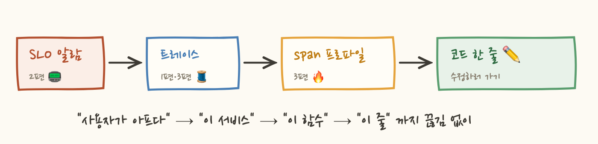

2편. 알람은 언제 울려야 하나 : SLO와 에러 버짓 ← 지금 이 글
3편. 수집 기술의 최전선 : eBPF, OpenTelemetry, 프로파일링
새벽 3시, 폰이 웁니다. "에러율 1% 초과." 졸린 눈으로 대시보드를 열어보니 5분간 반짝 튀었다가 이미 정상으로 돌아와 있습니다. 아무 조치도 할 게 없습니다. 다시 잠들 무렵 또 울립니다. 이런 새벽이 몇 번 반복되면 팀은 알람을 무시하는 법을 배웁니다. 그리고 진짜 장애가 온 날, 그 알람도 같이 무시되죠.
문제는 담당자의 정신력이 아니라 알람의 설계입니다. 이번 편은 "언제 사람을 깨워야 하는가"에 대한 구글 SRE의 답을 다룹니다. 차례로 SLI와 SLO, 에러 버짓, 그리고 burn rate를 보겠습니다.
1. SLI: 무엇을 측정할 것인가
SLI(Service Level Indicator)는 "서비스가 잘 되고 있나"를 나타내는 측정값 그 자체입니다. 핵심은 사용자 관점으로 정의한다는 점입니다. 보통 이런 비율로 만들어요.
"CPU 사용률" 같은 건 SLI로 쓰지 않습니다. CPU가 90%여도 사용자가 멀쩡하면 문제가 아니니까요. 내부 상태(원인)가 아니라 사용자가 겪는 증상을 지표로 삼습니다. 이게 SLI 설계의 전부라고 해도 과언이 아니에요.
2. SLO와 SLA: 목표와 계약
SLO(Service Level Objective)는 그 SLI에 대한 목표치입니다. "30일 동안 요청의 99.9%가 성공한다"처럼 반드시 기간이 붙어요. 중요한 건 이게 내부용 약속이라는 점입니다. 어기면 페널티가 아니라 행동 변화(뒤에 나올 에러 버짓)가 따릅니다.
그리고 100%는 목표가 아닙니다. 99.9% → 99.99%로 올리는 비용은 기하급수적으로 늘어나는데, 사용자의 집 와이파이가 이미 99.9%보다 불안정해요. "충분히 좋은" 수준을 정하는 것이 SLO 설계의 핵심입니다.
SLA(Service Level Agreement)는 SLO를 고객과의 계약으로 만든 겁니다. 어기면 환불·크레딧 같은 금전 보상이 따라요. AWS의 "월 가용성 99.99% 미달 시 크레딧 10%"가 전형이죠. 그래서 SLA는 SLO보다 느슨하게 잡습니다. 내부 목표는 99.95%로 두고 고객 약속은 99.9%로 두는 식이에요. SLO가 먼저 울리는 경보기라면 SLA는 법적 마지노선이에요.

3. 에러 버짓: SLO를 뒤집으면 예산이 된다
여기서부터가 재밌는 부분입니다. SLO가 99.9%라는 말은 뒤집으면 0.1%는 실패해도 된다는 뜻이에요. 이 허용량이 에러 버짓(error budget)입니다.
이게 왜 강력하냐면, 신뢰성을 도덕("장애는 나쁘다")에서 자원 관리로 바꿔주기 때문입니다.

버짓이 넉넉하면 공격적으로 배포하고 실험해도 됩니다. 버짓을 다 썼으면 신규 기능을 멈추고 안정화 작업만 해요. 개발팀(빨리 내보내고 싶다)과 운영팀(지키고 싶다)의 영원한 긴장이 숫자 하나로 중재되는 겁니다.
4. Burn Rate: 예산이 타는 속도
이제 알람 설계로 갑니다. 순진한 알람 두 가지가 왜 실패하는지부터 볼게요.
"에러율 1% 넘으면 알람" → 5분 반짝 스파이크에도 울립니다. 30일 버짓 관점에선 아무것도 아닌데 새벽에 깨우죠. 서두의 그 알람이에요. "버짓 소진되면 알람" → 이미 늦었습니다. 예산 다 쓴 다음에 알아봐야 소용없죠.
그래서 나온 개념이 burn rate(소진 속도)입니다. "지금 속도로 에러가 나면 버짓이 얼마나 빨리 다 타는가"를 배수로 나타내요.

burn rate가 1이면 정확히 30일에 걸쳐 소진되는데, 이게 설계대로입니다. 14.4면 2일 만에 한 달 예산이 모두 소진되는 속도이고, 1000이면 40분 남짓 만에 한 달 예산이 전부 사라지는 속도예요. 알람 기준이 "에러율 몇 %"에서 "한 달 예산 기준으로 지금 얼마나 위험한 속도냐"로 바뀌는 게 핵심입니다.
5. Multi-Window: 왜 창을 두 개 겹치나
마지막 퍼즐이 남았습니다. burn rate를 얼마 동안 측정해서 알람을 걸까요?
짧은 창(5분)만 쓰면 반응은 빠른데 반짝 스파이크에도 울립니다. 긴 창(1시간)만 쓰면 오탐은 없는데 두 가지 문제가 생겨요. 감지가 느리고, 더 나쁘게는 장애가 끝나도 한참 동안 알람이 안 꺼집니다(1시간 평균에 과거 에러가 남아있으니까).
그래서 구글 SRE Workbook의 정석은 두 창을 AND로 묶는 겁니다.

긴 창이 "지속적인 문제 맞음"을 보증하고, 짧은 창이 "지금도 진행 중"을 보증합니다. 장애가 끝나면 짧은 창이 먼저 내려가서 알람이 바로 꺼져요. 실전에서는 이걸 심각도별로 여러 단으로 겁니다.
• burn rate 6 (5일 내 소진) → 근무시간 티켓 🎫
• burn rate 1~3 → 백로그에 기록 📝
빠르게 타면 사람을 깨우고, 천천히 타면 업무로 처리한다.
6. 데이터독에서는
SLO 기능이 내장돼 있습니다. 메트릭 기반 SLO(요청 성공률 등)나 모니터 기반 SLO를 만들면 버짓 잔량과 burn rate를 자동 계산해주고, burn rate 알람도 UI에서 long window / short window를 지정해 바로 걸 수 있어요. 위 이론이 그대로 구현돼 있어서, 개념만 잡히면 설정은 어렵지 않습니다.
시작하는 팀에게 권하는 순서는 이렇습니다. 먼저 핵심 사용자 여정 한두 개(로그인, 결제)에만 SLI를 정의하고 → 지난 한 달 실측치를 보고 달성 가능한 SLO를 잡고(희망사항 말고 현실) → burn rate 알람을 2단(페이저/티켓)으로 걸고 → 기존의 원인 기반 알람(CPU, 메모리)은 페이저에서 빼서 대시보드로 강등합니다. 이 마지막 단계가 새벽잠을 돌려줍니다.
알람은 개별 에러율이 아니라 버짓이 타는 속도(burn rate)에 걸어야 하고, 긴 창 + 짧은 창 AND 조건으로 걸어야 오탐 없이 빠르게 잡는다. 신뢰성은 도덕이 아니라 예산 관리다.